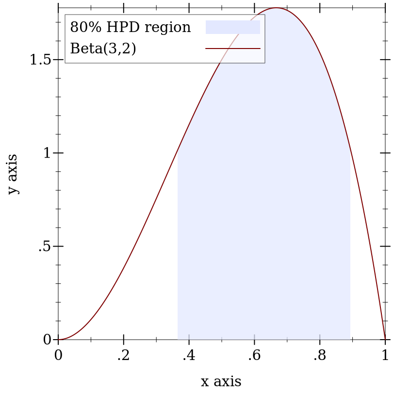

9.2 分布类型和操作
syntax
(PDF In)
syntax
(Sample Out)
syntax
(CDF In)
syntax
(Inverse-CDF Out)
type
(distribution In Out)
struct
(struct distribution (pdf sample))
pdf : (PDF In) sample : (Sample Out)
> (distribution? (discrete-dist '(a b c))) #t
> (distribution? (normal-dist)) #t
> ((distribution-pdf (normal-dist)) 0) 0.39894228040143265
> ((distribution-sample (normal-dist))) 0.45174070107274406
> (ann (poisson-dist) (distribution Real Real))
- : #(struct:distribution
((->* (Real) (Any) Flonum)
(case-> (-> Real) (-> Integer (Listof Real)))))
(poisson-dist 0.5)
type
(ordered-dist In Out)
struct
(struct ordered-dist distribution (cdf inv-cdf min max median))
cdf : (CDF In) inv-cdf : (Inverse-CDF Out) min : Out max : Out median : (Promise Out)
与 distribution 类似, In 类型参数是一个有序分布接受的数据类型,作为其 pdf 的参数, Out 类型参数是一个有序分布作为随机样本返回的数据类型。 此外,它的 cdf 接受 In 类型的值,而它的 inverse cdf 返回 Out 类型的值。
> (ordered-dist? (discrete-dist '(a b c))) #f
> (ordered-dist? (normal-dist)) #t
中位数被存储在 ordered-dist 中,以便准确计算区间概率。 例如,对于中位数为 0.0 的 d = (normal-dist), (real-dist-prob d -2.0 -1.0) 是用下尾概率计算的, (real-dist-prob d 1.0 2.0) 是用上尾概率计算的。
> (ann (poisson-dist) (ordered-dist Real Real))
- : #(struct:ordered-dist
((->* (Real) (Any) Flonum)
(case-> (-> Real) (-> Integer (Listof Real)))
(->* (Real) (Any Any) Flonum)
(->* (Real) (Any Any) Real)
Real
Real
(Promise Real)))
(poisson-dist 0.5)
syntax
> (pdf (discrete-dist '(a b c) '(1 2 3)) 'a) 0.16666666666666666
> (pdf (discrete-dist '(a b c) '(1 2 3)) 'a #t) -1.791759469228055
procedure
(sample d) → Out
d : (dist In Out) (sample d n) → (Listof Out) d : (dist In Out) n : Integer
> (sample (exponential-dist)) 1.2600248797116516
> (sample (exponential-dist) 3) '(0.18182979242395483 0.3277122891223285 0.5065276496883495)
procedure
d : (ordered-dist In Out) v : In log? : Any = #f 1-p? : Any = #f
当 log? 是 #f 时, cdf 返回一个概率;否则,它返回一个对数概率。
当 1-p? 为 #f 时, cdf 返回一个下尾概率或对数概率(取决于 log?); 否则,它返回一个上尾概率或对数概率。
procedure
(inv-cdf d p [log? 1-p?]) → Out
d : (ordered-dist In Out) p : Real log? : Any = #f 1-p? : Any = #f
当 log? 为 #f 时, inv-cdf 将 p 解释为一个概率; 否则,它将 p 解释为一个对数概率。
当 1-p? 是 #f 时, inv-cdf 将 p 解释为下尾概率或对数概率(取决于 log?); 否则,它将 p 解释为上尾概率或对数概率。
procedure
(real-dist-prob d a b [log? 1-p?]) → Flonum
d : Real-Dist a : Real b : Real log? : Any = #f 1-p? : Any = #f
procedure
(real-dist-hpd-interval d p) → (Values Flonum Flonum)
d : Real-Dist p : Real
> (define d (beta-dist 3 2)) > (define-values (x0 x1) (real-dist-hpd-interval d 0.8))
> (plot (list (function-interval (λ (x) 0) (distribution-pdf d) x0 x1 #:line1-style 'transparent #:line2-style 'transparent #:label "80% HPD region") (function (distribution-pdf d) 0 1 #:label "Beta(3,2)"))) 